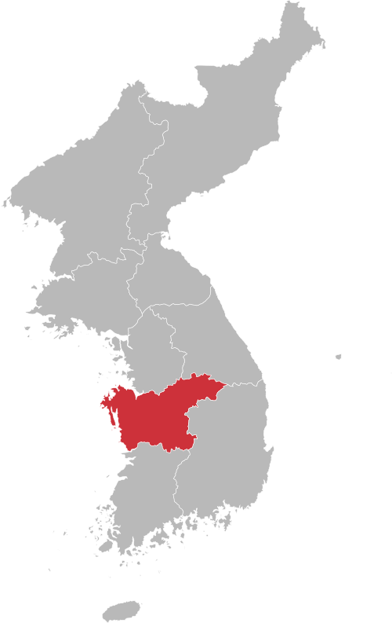
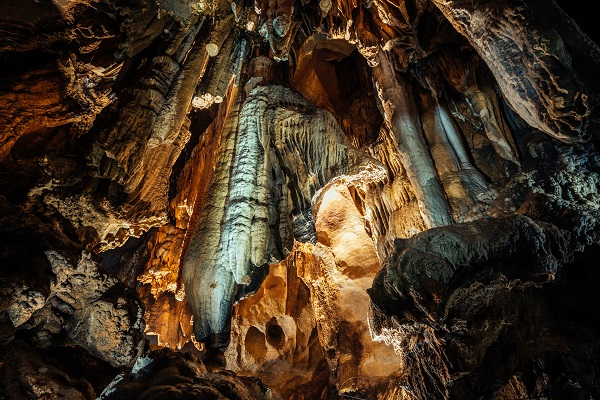
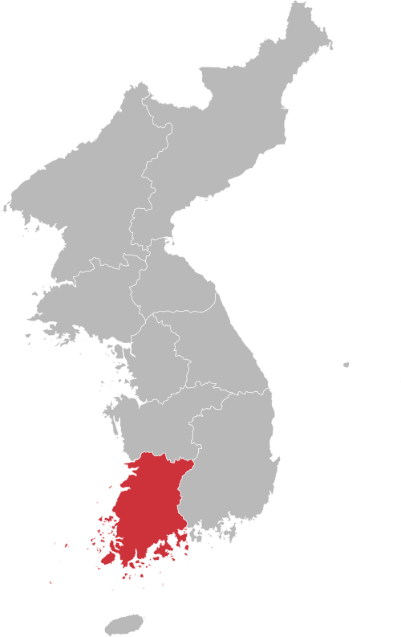

경기도 (Gyeonggi-do)

경기도는 새우젓에 황석어젓, 까나리젓을 사용해서 시원한
청량감을 살리며 산미와 감칠맛을 내는 김치를 담급니다.
Gyeonggi uses salted yellow stone and salted canary for shrimp, making it a refreshing dish.
Make kimchi that adds acidity and savory flavor while maintaining a refreshing feel.
Landmark
경기도에는 수원화성이라는 유명한 건축물이 있습니다.
수원화성은 조선 정조 시기에 지은 경기도 수원시의 성곽 건축물과 이를 중심으로 한 계획도시입니다.
오늘날에도 수원시의 상징이자 랜드마크로, 1997년 12월 유네스코 세계유산에 등재되었습니다.
In Gyeonggi-do, there is a famous structure called Suwon Hwaseong Fortress.
Suwon Hwaseong Fortress was built during the reign of King Jeongjo of the Joseon Dynasty and is a planned city centered on the fortress structure of Suwon, Gyeonggi-do.
Even today, it is a symbol and landmark of Suwon City and was registered as a UNESCO World Heritage Site in December 1997.
강원도 (Gangwon-do)
강원도는 담백하고 시원한 맛을 내기 위해
멸치를 우린 물을 사용하여 넣거나,
감칠맛을 내기 위해 맑은 새우젓, 멸치젓을 사용합니다.
Gangwon State creates a light and refreshing taste.
You can use water made with anchovies in it, or add it.
To bring out the umami flavor, we use clear salted shrimp and salted anchovies.
Landmark
강원특별자치도 양양군 강현면에 위치한 사찰로, 신라 문무왕 11년(671년)에 의상대사가 창건하였다고 전합니다.
위 사진은 절 끝자락에 위치한 거대한 관음불상으로 1977년까지만 해도 동양 최대의 불상이었습니다.
It is a temple located in Ganghyeon-myeon, Yangyang-gun, Gangwon State, and is said to have been founded by Uisang in the 11th year of King Munmu of Silla (671).
The picture above is a huge Gwaneum Buddha statue located at the end of the temple, which was the largest Buddha statue in the East until 1977.
충청도 (Chungcheong-do)

충청도는 소금만을 사용하여 젓갈 맛이 많이 나지 않고
양념을 적게 넣어 소박하고 시원한 맛이 나는 것이 특징입니다.
Hoseo only uses salt, so it doesn’t have much of a salted fish taste.
It is characterized by a simple and refreshing taste with little seasoning.
Landmark

충청도에는 약 4억 5천만년 동안 생성되어 온 석회암 자연동굴이 있습니다.
밤하늘의 오로라를 보는 듯 황홀하고 웅장한 모양이 가득합니다.
Chungcheong Province has a limestone natural cave that has been created for about 450 million years.
It is full of ecstatic and magnificent shapes as if looking at an aurora in the night sky.
경상도 (Gyeongsang-do)
경상도는 맵고 짠맛을 내는 것이 특징입니다.
멸치젓 국물과 갈치속젓을 넣어 만들고,
국물을 적게 하여 만든다고 합니다.
Yeongnam is characterized by a spicy and salty taste.
Made with anchovy sauce and salted cutlassfish,
It is said that it is made with less broth.
Landmark
경상북도 안동시 풍천면 하회리에 위치한 민속마을인 하회마을은 2010년 8월 유네스코 세계문화유산으로 지정된 명소입니다.
하회라는 이름 그대로 강물이 마을을 감싸고 흐르고 있습니다.
Hahoe Village, a folk village located in Hahoe-ri, Pungcheon-myeon, Andong-si, Gyeongsangbuk-do, was designated as a UNESCO World Heritage Site in August 2010.
As the name Hahoe suggests, the river flows around the village.
전라도 (Jeolla-do)

전라도는 고춧가루와 조기젓과 새우젓 등의
젓갈을 많이 사용하여 매운맛을 내는 것이 특징입니다.
Honam uses red pepper powder, salted croaker, and salted shrimp.
It is characterized by the use of a lot of salted fish to give it a spicy taste.
Landmark

순천만은 전라남도 순천시지역에 있는 만으로 갯벌에 펼쳐지는 갈대밭과 칠면초 군락, S자형 수로 등이 어우러져 다양한 해안생태경관을 보여주는 경승지입니다.
한국의 갯벌이라는 제목으로 유네스코 세계자연유산으로 등재되었습니다.
Suncheon Bay is a bay in Suncheon-si, Jeollanam-do. It is a scenic spot that shows a variety of coastal ecological landscapes, including reed fields spread out on the tidal flats, communities of chives, and S-shaped waterways.
It was registered as a UNESCO World Natural Heritage Site under the title of Korea's Tidal Flats.